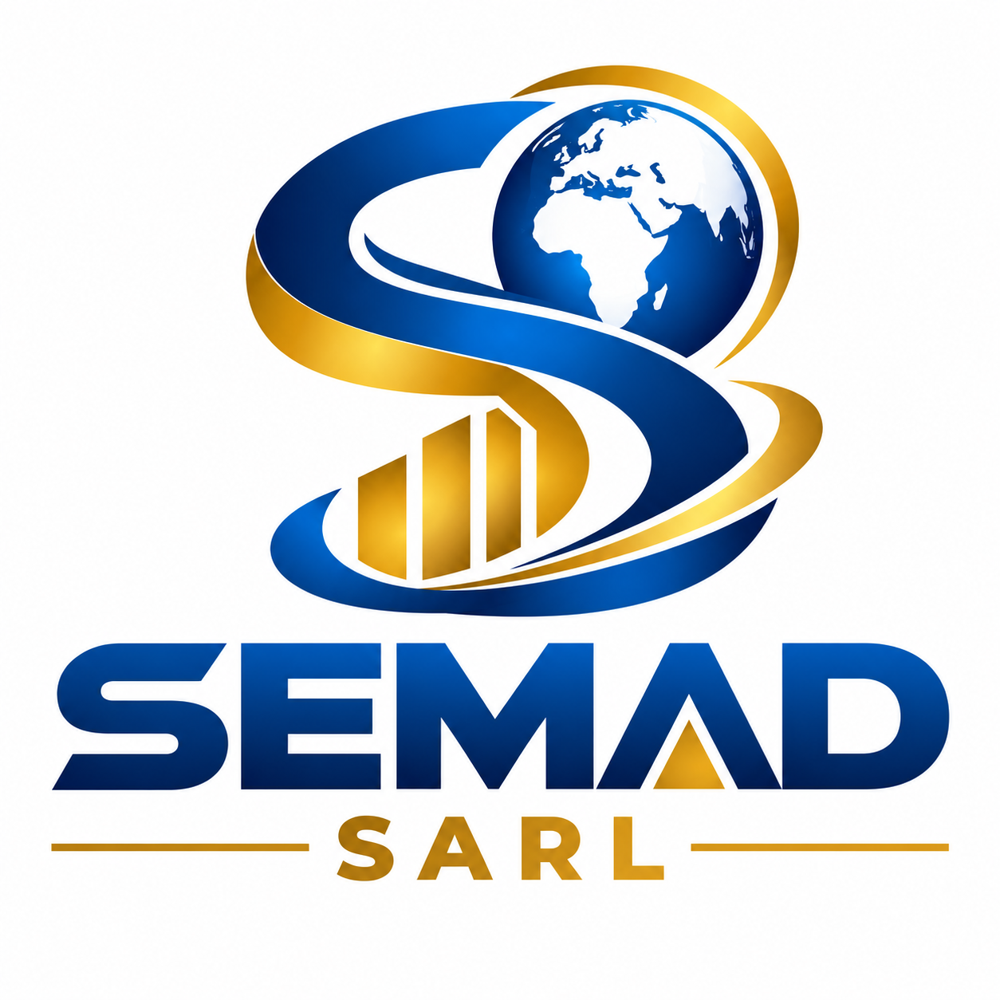

01 — Commerce et équipements
Développer le commerce général, notamment la fourniture d'Équipements de Protection Individuelle (EPI) aux secteurs minier, industriel et de construction.

SEMAD SARLNotre ambition pour un développement économique, humain et social durable.
Confiance • Excellence • Développement
Pour SEMAD SARL, le développement signifie transformer les potentialités de notre pays en réalisations concrètes, utiles et durables.
Société congolaise en cours de constitution à Kolwezi, dans la province du Lualaba, SEMAD SARL ambitionne de contribuer à la création de valeur, au développement des compétences et à l'émergence d'opportunités économiques.
Notre vision 2027–2030 présente les orientations stratégiques que nous souhaitons poursuivre progressivement.
Développer le commerce général, notamment la fourniture d'Équipements de Protection Individuelle (EPI) aux secteurs minier, industriel et de construction.
Préparer et développer des projets de culture du maïs et d'élevage de poules pondeuses afin de contribuer à la production alimentaire locale.
Favoriser l'acquisition de compétences pratiques, notamment en informatique et en coupe et couture, pour soutenir l'employabilité et l'entrepreneuriat.
Préparer un département professionnel de sécurité privée et de gardiennage, dont les activités débuteront uniquement après l'obtention des autorisations légalement requises.
Promouvoir une gestion responsable, développer les compétences locales et contribuer progressivement à la création d'opportunités professionnelles.
Finaliser les démarches administratives, organiser la gestion de la société, identifier les fournisseurs et préparer les premiers projets pilotes.
Consolider les premières activités viables, développer les projets agricoles et rechercher des partenariats commerciaux et techniques.
Renforcer les procédures de gestion, améliorer la qualité des prestations et développer les compétences du personnel.
Mesurer les résultats obtenus, identifier les projets performants et définir les orientations stratégiques suivantes.
Nous souhaitons suivre nos résultats à travers des indicateurs concrets : nombre de clients, chiffre d'affaires, production agricole, production avicole, personnes formées, emplois créés et respect des exigences de conformité.
Ces objectifs constituent des ambitions prévisionnelles, dont la réalisation dépendra des ressources disponibles, des partenariats et des autorisations nécessaires.
Le développement ne se décrète pas : il se construit par le travail, la bonne gouvernance, la responsabilité et la persévérance.
SEMAD SARL souhaite avancer étape par étape, en privilégiant les réalisations concrètes et durables.
Développer aujourd'hui, c'est préparer les opportunités de demain.